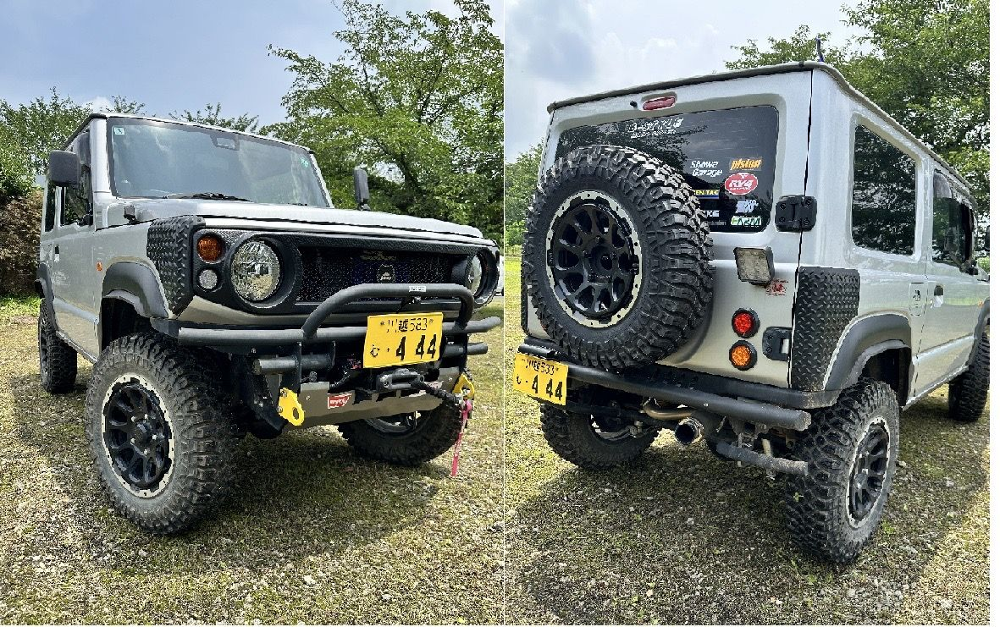
昔からSJ10が大好きで3台乗り継いでます。B-STYLEの皆様に出会えて、ジムニーの新たな楽しさを知り本当に充実したカーライフを送れています。
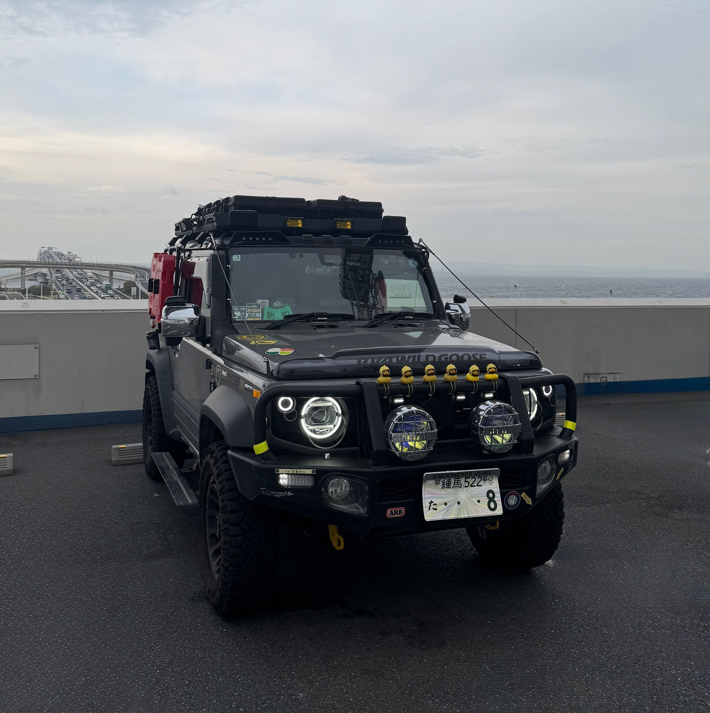
タフな道を走破できるオーバーランドスタイルに仕上げました。
VEHICLE SPEC：JB74W／パートタイム4WD／K15B 1.5L DOHC／102PS／130Nm／4AT
∞MAVERICK∞ OVERLAND EXPEDITION PROJECT
何処でも一緒に行けて、何処からでも帰って来られる相棒として大事に育ててます。この相棒に負けない腕も身につけないと・・・
— B-STYLEより：これからたくさん遊びに行って、少しずつ自然に覚えていけば大丈夫です。一緒に楽しみながら腕を磨いていきましょう。
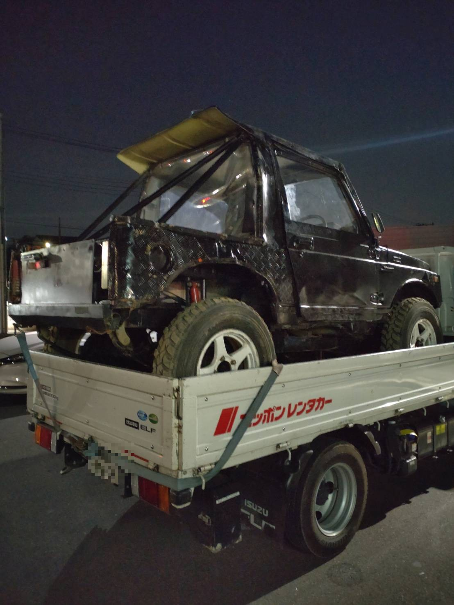
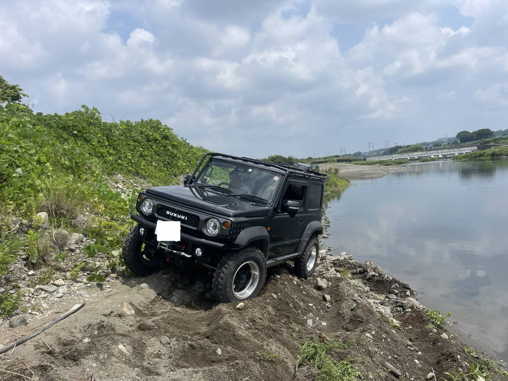
初めてのトライアル大会2025 B-STYLE Cup Open、とても価値のある大会でした。結果ではなく、望む姿勢がたまらない！
そしてB-STYLE練習会皆勤賞、コケても壊れないJA11増車、何処まで行くのか？ジムニー最優先の生活です。楽しい〜。
— B-STYLEより：JB74でB-CUPに参加してから、完全に火が付いたように見えました。競技用車両まで増車するほどの本気度を見たら、こちらも本気で教えるしかないですよね。呑み込みが早く、すでにイケイケ！いつも見ていてとても愉快な仲間です。
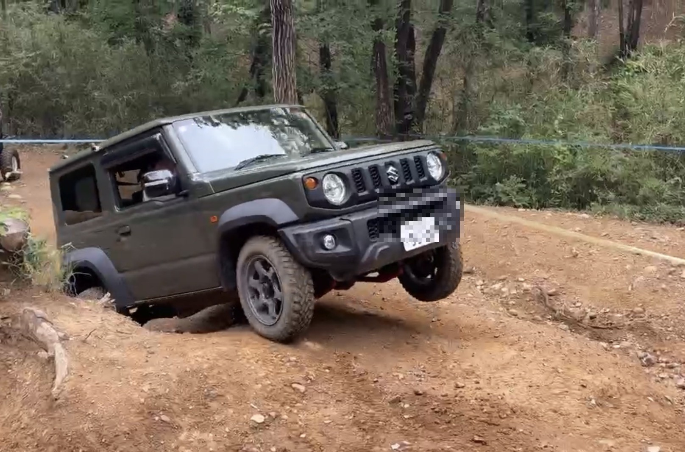
納車1年後にB-STYLE体験スクールに参加させていただいて以来、オフロードの魅力にどっぷりハマっています！
「ノーマルでは走れないのでは？」というネットの噂を真に受けてしまい、最初は本格コースにビビりながらの走行でした。しかし、B-STYLEオフィシャルの方々から親切丁寧に先導・アドバイスをいただいたおかげで、恐怖心も吹き飛び、最後には笑顔で走らせることができるようになりました。
どノーマルであっても、正しい走り方とルートを見極めれば、カスタム車に遜色ない走りができると教えていただき、愛車のポテンシャルに感動しています。
どノーマルだからと本格オフロード走行を躊躇している方がいたら、ぜひ一度体験スクールに参加してみてください！ノーマルの底力に驚くこと間違いなしですよ。
— B-STYLEより：体験スクールをきっかけにオフロードを好きになってもらえて本当に嬉しいです。ノーマル車両でもしっかり走れることを身をもって証明してくれる、心強い仲間です。これからも一緒に楽しみましょう！

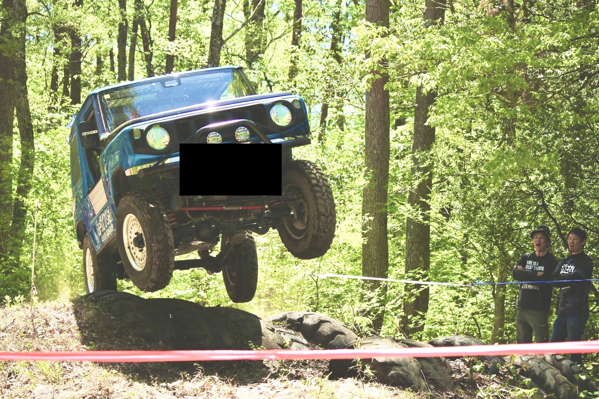
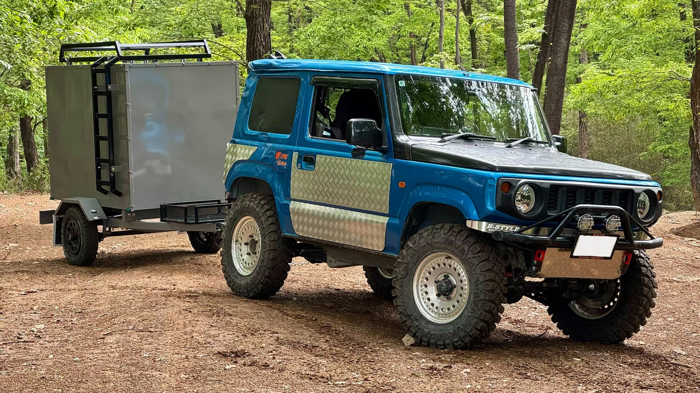
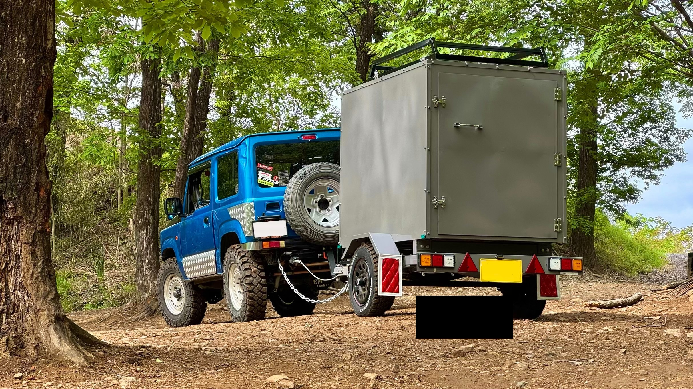
初めてのジムニーはJB64。ノーマルからB-STYLE製品をはじめ様々なパーツで仕上げた一台です。今ではB-STYLEの仲間を引っ張ってオフロードに行くベテランに。トライアルでもグループ員にいろいろ教えたり誘導したりと、大変助けてもらっています。B-STYLE製品の新作レビューや商品紹介もYouTubeで発信してくれていて、いつも感謝しています。
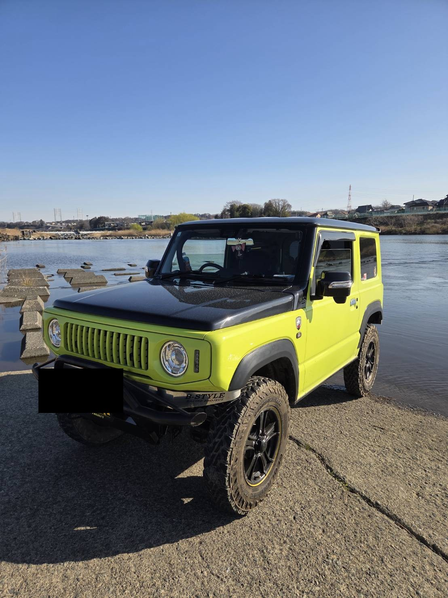
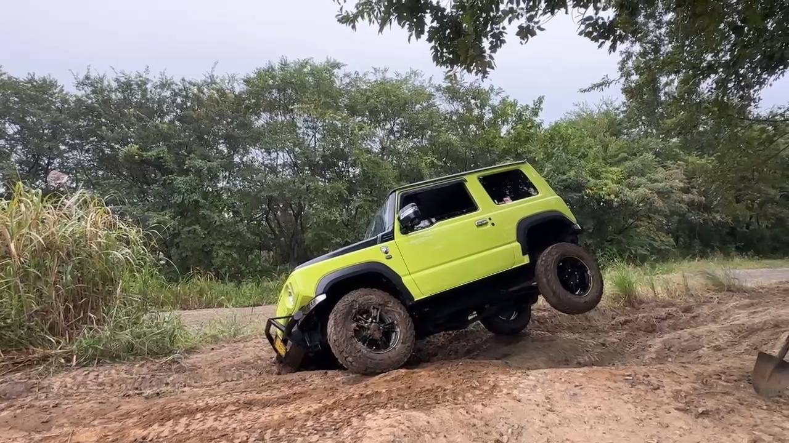
色でも何でも自己満足、オンでもオフでも普段乗りでもどこ行くにも乗ってて楽しい相棒。乗り心地、ロードノイズもスパイス。
— B-STYLEより：いつもイベントのお手伝いや参加をありがとうございます。一見こわもてですが、しゃべりも車も愛嬌たっぷりの面白い人。初心者講習会では初心者の面倒見もしてくれて、とても助かっています。
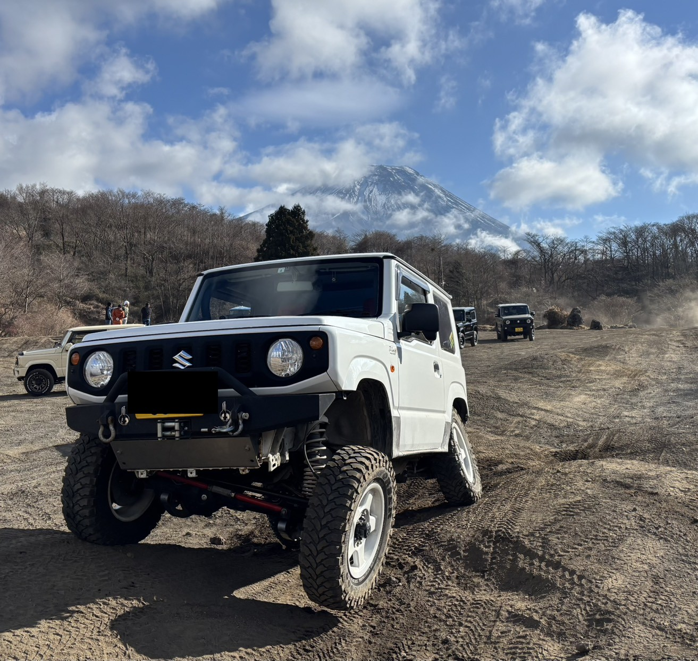
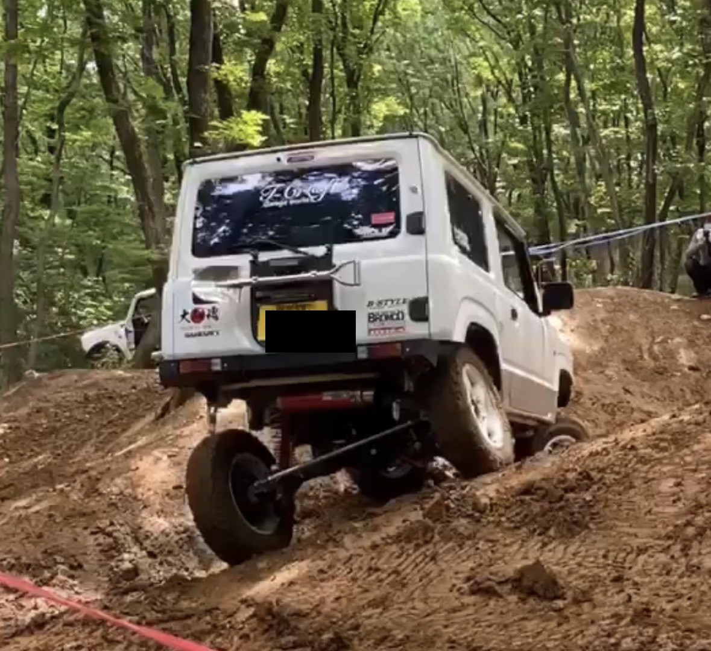
エンジン以外は大体手が入ってると思います。取付け・組込みもほとんど自分でやってます。自分自身でイジるのが大好き人間です。
— B-STYLEより：いつもB-STYLE走行会やイベントに足を運んでいただきありがとうございます。B-styleフィッシング部員でもあり、濃厚なお付き合いをさせていただいてます。
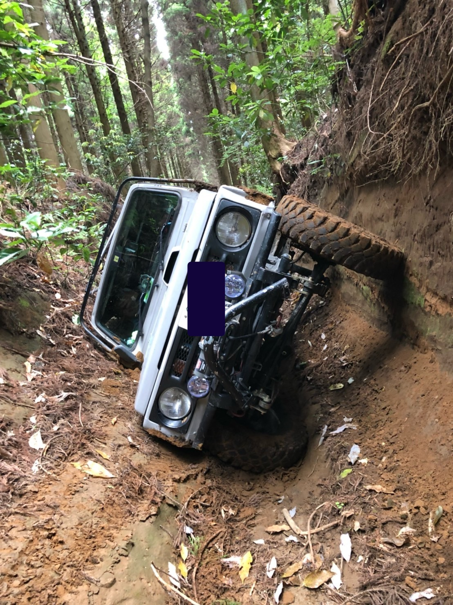
30万キロ走行で主に廃道走行でした。やはりジムニーは丈夫。今は車検切れですが、エンジンをかけると一発始動。いろいろな車・バイクに乗りましたが、ジムニーはおもしろい！今はJA12Vを楽しく乗り回しています。
第2号、お待ちしています。上記のInstagramまたはメールからお気軽にどうぞ。